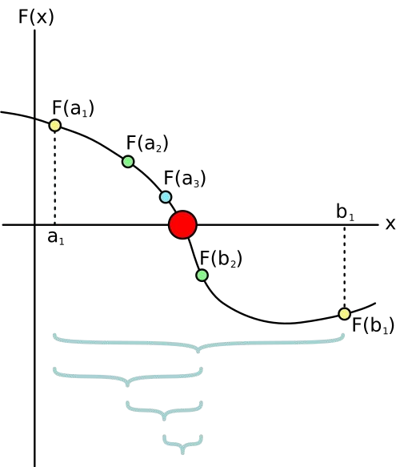

HWRS 564a · Week 4 · Thursday, September 17
Week 4, session 2 of 2
This is the session that explains what MODFLOW is doing when you press go in Week 11. Everything after this is the same two ideas at scale.
An unconfined aquifer drains to a stream. Under Dupuit assumptions,
\[q(h) = \frac{K\,(h^{2} - h_{s}^{2})}{2L}\]
At steady state that has to equal the recharge collected upgradient, \(RL\):
\[f(h) = \frac{K\,(h^{2} - h_{s}^{2})}{2L} - RL = 0\]
Find the \(h\) that makes \(f(h)\) zero. This one is rearrangeable — it’s quadratic. The ones in Week 12 are not, and the method is the same either way.
The sign flips between 10 and 12. A continuous function that changes sign has a root in between — that is the intermediate value theorem, and it is the only thing bisection needs.

Start with the outer bracket, evaluate the midpoint, and discard the half whose endpoints have the same sign.
Each new brace is half as wide. The estimate improves even when the curve is awkward, because the method depends on a sign change, not on the curve’s shape.
lo and hi with opposite signsmid, the midpointEvery step halves the interval. From a 12 m bracket to \(10^{-8}\) m takes \(\log_2(12/10^{-8}) \approx 31\) steps. Slow, and completely reliable.
Given a bracket, decide which half to keep.
Hint 1
f(lo) * f(mid) < 0 is true when the two have opposite signs — so the root is in the lower half.
Hint 2
Each branch assigns both ends: you keep one of the original endpoints and mid becomes the other.
if func(lo) * func(hi) > 0:
raise ValueError("no sign change — that's not a bracket")
for n in range(max_iter):
...
if hi - lo < tol:
return mid
raise RuntimeError("did not converge")Both of those messages are what MODFLOW prints at you in Week 12. Now you know where they come from.
brentq mixes bisection with faster methods and gets there in about a quarter of the steps, with the same guarantee.
Write your own once, so the library isn’t magic. Then use the library.
\[\frac{dS}{dt} = -kS \qquad\Longrightarrow\qquad S(t) = S_0 e^{-kt}\]
Explicit: use the storage you know
\[S_n \xrightarrow{\;kS_n\Delta t\;} S_{n+1}\]
\[S_{n+1}=S_n-kS_n\Delta t\]
↔︎
Implicit: use the storage you are solving for
\[S_n \xrightarrow{\;kS_{n+1}\Delta t\;} S_{n+1}\]
\[S_{n+1}=S_n-kS_{n+1}\Delta t\]
We know the analytic answer, which is exactly why this reservoir is worth simulating: we can separate accuracy from stability.
Hint
The new storage is the old storage minus what drained during the step. What drained is \(kS\,\Delta t\), using the storage at the step you’re leaving.
Storage goes negative, then swings further out every step. Not a bug in the code — the scheme itself has failed.
\[S_{n+1} = S_n\,(1 - k\Delta t)\]
Every step multiplies by the same factor.
Stability needs \(\Delta t < 2/k\). With \(k = 10\)/d that is 0.2 days — and nothing in the code warns you when you cross it.
Evaluate the rate where you’re going:
\[S_{n+1} = S_n - k S_{n+1} \Delta t \qquad\Longrightarrow\qquad S_{n+1} = \frac{S_n}{1 + k\Delta t}\]
\(1/(1 + k\Delta t)\) is between 0 and 1 for any positive time step. It cannot oscillate and it cannot diverge.
The price: at \(\Delta t = 0.15\) it gives 40.0 where the truth is 22.3. Stable is not the same as accurate.
For a nonlinear reservoir,
\[\frac{dS}{dt} = P - kS^{3/2} - E\]
an implicit step puts the unknown \(S_{n+1}\) inside the flux term:
\[g(S_{n+1}) = S_{n+1} - S_n - \Delta t\left(P-kS_{n+1}^{3/2}-E\right)=0\]
Newton’s method solves that root problem by repeatedly updating
\[S^{(j+1)} = S^{(j)} - \frac{g(S^{(j)})}{g'(S^{(j)})}\]
The tolerance and iteration cap now apply inside every time step. That is the bridge from today’s reservoir to MODFLOW’s solver messages.
At what time step does forward Euler start to oscillate, and at what time step does it diverge, for a reservoir with \(k = 10\)/day?
Hint
The step factor is \((1 - k\Delta t)\). Oscillation starts when that factor turns negative; divergence starts when its magnitude passes 1.
| Explicit | Implicit | |
|---|---|---|
| Accurate at small \(\Delta t\) | yes | yes |
| Stable at large \(\Delta t\) | no | yes |
| Cost per step | cheap | needs a solve |
| Fails how? | loudly | quietly |
MODFLOW is implicit. It will hand you a converged answer at a time step far too coarse to mean anything, and it will not complain. Checking that the answer stops changing when you halve \(\Delta t\) is your job, not the solver’s.
What you did today
What’s due
Next week
pandas — arrays with labels, and the first real dataset: a century of water levels from the Tucson basin.
HWRS 564a · Fall 2026